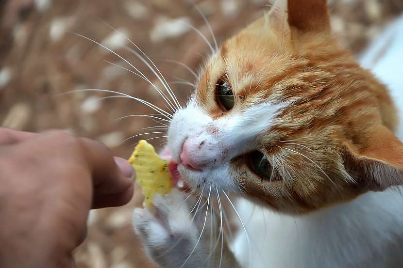

¿Cómo debo alimentar a mi gato?
Puedes alimentar a tu gato con pienso, alimentos balanceados secos o alimento húmedo. Existen multitud de sabores, presentaciones y marcas. Elige el alimento adecuado para su edad (cachorro, adulto o senior ) y su estado fisiológico (cría, gestación, lactancia, castrado, etc).
Debes dejarle comida todo el día en un lugar que sea de fácil acceso para él y donde no haya insectos o roedores. Tiene que disponer de agua fresca y limpia en otro recipiente, aunque a los gatos les encanta beber de corrientes de agua en movimiento, como pequeñas gotas que caen de un grifo mal cerrado. No conviene alimentarlos con dietas caseras, ya que es más complicado garantizar un correcto equilibrio nutricional.
¿Cómo cuidar la salud de mi gato
Entre los cuidados de un gato son imprescindibles la vacunación y desparasitación siguiendo las indicaciones del veterinario. En general, un adulto debe vacunarse anualmente contra las enfermedades respiratorias, la leucemia y la rabia, aunque las pautas varían en función del sitio en donde residas, y desparasitarse 4 veces al año para evitar los parásitos internos.
Para los parásitos externos como las pulgas, piojos o garrapatas existen varios productos de fácil aplicación. Antes de utilizarlos, debemos consultar con nuestro veterinario para elegir el producto que mejor se adapte a nuestro gato y a nuestras necesidades. Otro aspecto fundamental para mantener sano y feliz a tu gato es la higiene. Debes tener una bandeja sanitaria y limpiar diariamente las deposiciones, ya que no les gusta usarla sucia y probablemente buscará otro sitio donde hacer sus necesidades.
Cuidados de un gato: ¿qué son las bolas de pelo?
No es necesario que bañes a tu gato, ya que los gatos son animales muy limpios que se acicalan continuamente a lo largo del día. Sin embargo, cuanto más lo cepilles mejor será para su piel y su pelo. Tendrá un manto más fuerte, espeso, brillante, sano y sin bolas de pelo. Los gatos que viven en la calle sometidos a los cambios de temperatura estacional y a las variaciones de luz pierden menos pelo en comparación con los que viven en casa a una temperatura constante y con luz artificial.
Esta pérdida de pelo y el lavado o lamido de los gatos hace que muchas veces se formen estas acumulaciones de pelo o tricobezoares. Suelen expulsarse normalmente, pero si esto no ocurre, su presencia en el tracto gastrointestinal puede provocar alteraciones como vómitos, diarreas, obstrucciones y falta de apetito entre otros síntomas.
¿Cada cuánto tiempo debo cepillar y bañar a mi gato?
Cepilla frecuentemente a tu gato para eliminar su pelo muerto y dale malta felina para evitar la formación de bolas de pelo. Con 2 o 3 veces por semana será suficiente y le ayudarás a mantener un buen tránsito gastrointestinal. Existen también piensos especiales para estos casos. Se llaman Hairball, no son medicados y los hay de varios sabores y marcas.
No es necesario que bañes a tu gato, ya que los gatos son animales muy limpios que se acicalan continuamente a lo largo del día. Sin embargo, cuanto más lo cepilles mejor será para su piel y su pelo. Tendrá un manto más fuerte, espeso, brillante, sano y sin nudos. Si quieres bañarlo, puedes hacerlo con un champú especial para gatos y secarlo con una toalla o un secador de pelo manual. Generalmente a los gatos no les gusta el agua ¡habitualmente el dueño acaba más mojado que el gato después del baño!
Si eres primerizo en los cuidados de un gato, descubrirás lo fascinante que son estos pequeños felinos y lo fácil y divertido que te resulta convivir con ellos. En Tiendanimal encontrarás todo lo que necesitas para disfrutar al máximo de tu gato y proporcionarle los cuidados adecuados. Desde la comida para gatos más deliciosa y saludable hasta toda clase de productos y accesorios para mantener la higiene de tu gato en perfectas condiciones.